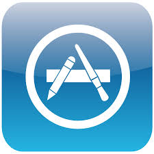

Download
Supercell, the company that made Clash of Clans, has just released a new mobile game called Clash Royale. This game is already on its path to world domination. Why?Because its incredibly fun. It's also surprisingly deep, so it's a good idea to go into it with a few tips in mind. Clash Royale is mashup of genres. It's a card game, in that you amass a collection of cards to use in battle, kind of like Hearthstone or Magic: The Gathering. It's also a tower defense game because your cards summon troops, spells, and buildings that help you take down your opponents' castles. The game might look simple on the surface, but there's a lot going on once you get a feel for it.Clash Royale is a preety good game.If you haven't downloaded it yet just get.Its avaiable on Google Play Store and App Store.
Gameplay
In Clash Royale, players are ranked by level and trophies. The maximum level is thirteen, while there are nine arenas (excluding the Training Camp) in total in the game. A player wins a battle by destroying more towers than the opponent, or by destroying the opponent's "King's Tower", which grants an automatic three "crown" victory. At the start of each game, both players are given a "hand" of four cards from a "deck" of eight cards chosen by the player. Cards can be used to attack and defend. To play the cards, the player must have enough "elixir", one elixir automatically being replenished every 2.8 second(during double elixir 1.4 seconds). Once a card is placed, a new card from the deck is drawn to the hand.
Tips and Strageties
1. You only need to destroy the middle tower to win
It might be tempting to try to pulverize all three of your opponent's towers, but the one in the middle is the only one you need to destroy to win a match. Since you don't directly control your troops, they'll take out the tower on the left or right side first before moving on to the middle one. Regardless, focus your attacks on one side or the other so your troops take out the middle tower as quickly as possible
2. Don't forget defense
As you go about the important business of attacking your opponent's towers, don't forget about defending your own. If neither side topples their opponent's middle tower, whoever destroyed the most towers wins. Defending your towers is important.If you and your opponent have both taken the same number of towers at the end of the three-minute match, an extra minute will be added to the clock. But if you put some effort into defense and your opponent doesn't,you'll probably win the round.
3. Keep your deck varied
A strong deck is one that can handle any situation that comes along. To that end, you'll want to have all kinds of troops ready to get to work: a heavy hitter like a giant, some ranged troops like archers who can attack flying enemies, brawlers like knights, and flying attackers like dragons. Throw in some attack spells like fireballs and arrows as well as a building or two, and you'll be set.As you piece together your decks, it's also important to vary the Elixir costs of your cards. If your deck is full of high-cost cards, you'll find yourself waiting for your Elixir bar to fill before you can react to your enemy's attacks. By keeping your deck varied in terms of card classes and Elixir cost, you'll maximize your chances of being ready to handle any situation your opponent throws at you.
4. Watch the clock
The timer matters in this game. If the score isn't tied at the end of three minutes, that's the game. If your troops are close to knocking out a tower and time is running out, go all-out on offense - as long as you can take their tower before they can take yours.
5. Upgrade your most useful cards first
This may sound obvious, but it's important to point out because as your card collection grows, you'll ditch some of your starter cards in favor of newer, better cards. If you notice a card isn't doing much for you, don't upgrade it, even when you get the option. It's better to save your gold to upgrade a better card down the line.
6. Save some Elixir
During battles, Elixir is your primary resource. You might be tempted to splurge it all as soon as you can afford a new card, but resist this temptation. It's often better to keep some on hand so you can react to moves your opponent makes. It's also wise not to spend Elixir on superfluous attacks, like sending in a fireball when the troops that are currently attacking a tower have it handled. Every unnecessary unit of Elixir you spend is one you won't be able to use strategically down the line. That said, never let your Elixir level sit while it's full. Every second that passes without you gaining Elixir is wasted.
7. Pair up units to cover their weaknesses
Every unit in Clash Royale has strengths and weaknesses. A smart strategy, then, is to know your units’ strengths and weaknesses, and pair them up to form unstoppable combinations. For instance, Archers have low defense, but if you put a hearty Giant in front of them, they become significantly more useful.